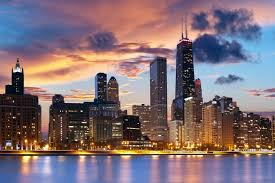

 Eric's Random Chicago Notes
(Work in progress. Last updated June 5, 2015 by Eric Prebys)
General
Chicago is a great city. Enjoy it while you're here.
Getting Around
Driving into town is a mess, and should be avoided. The train is
the best option. Depending on where you are, you'll either take
the Union Pacific West line from Geneva or the Burlington Northern Santa Fe line from Aurora or Rt. 59. Once you're in town, you can walk a lot of place, or take the "L" or buses.
If you select the "public transportation" option on Google Maps, it
will tell you exactly how to get where you're going. In town,
there are also cabs, and Uber works extremely well.
Local secret: There are two water taxi options that are a very
cool way to sightsee and get around at the same time. The first takes you several locations in the city. The second
services the shoreline and can take you to Navy Pier and the museum
campus (Field Museum, Shedd Aquarium and Adler Planetarium). Both
pick up near the train stations. Doing a loop to Navy Pier and the
museums is a great option, particularly on a nice day.
Things to See and Do
Museums, etc.
The Art Institute is an incredible
art museum. It's famous for impressionists, but also has lots of
other stuff, including a cool weapon and armor exhibit. An easy
walk from the train station.
The other three are in a cluster. It's a bit of a walk to get there,
but pleasant on a nice day. Consider public transportation
otherwise:
The Museum of Science and Industry
is well South of town, by University of Chicago. You can get
there by "L". The best thing there is the U-505, a German
submarine captured during WWII. You used to have to wait hours to
see it, but now it has timed tickets; however, they run out early on
busy days, so either get there early, or see if there's a way to
reserve tickets online, because you definitely don't want to miss
it. I personally like their old school exhibits like "fetuses in
jars" and "sliced up guy", but these are not as prominently displayed
as they used to be (I wonder why), so be sure to seek them out. You can
hang out in the U of Chicago area afterward, but be careful not to
wander out of the area, because things get really bad really fast.
Places to hang out
On a nice day, just walking around Grant Park and the shore is very nice of nice.
Navy Pier is touristy, but
fun. Lots of restaurants and bars. You can also catch
sightseeing cruises from there. Chicago is famous for stained
glass, and there's an incredible permanent (free) stained glass exhibit
as you walk toward the end of the pier.
Magnificent Mile is
kind of fun to walk down. I can't afford to shop there, but it's
free to look. The Apple Store in Manhattan is probably the only
Apple Store that's more crowded than the one on the Mag Mile.
Which neighborhood you like depends on your personality. Here are a few off the top of my head:
- Rush Street is probably the most famous area. Lots of restaurants and bars. A little upscale for my tastes.
- Lincoln Ave is a bit more hipster than Rush. More music, less drunks in the streets.
- Wrigleyville is, as you
would guess, near Wrigley Field, and thick with sports bars, but lots
of other things too. A good "something for everyone" option, but don't try to get near it on a game day (unless you're going to the game, of course).
- Wicker Park.
Weirdly cool. One of my personal favorites. When I was a
grad student, grad students could afford to live in Wicker Park.
I don't think that's true anymore, but the appearance hasn't changed
much.
There are lots of others. You can find more details about Chicago neighborhoods here.
Entertainment
Whatever you're looking for, it's there somewhere.
You're in Chicago, so you probably need to go to a blues club. The music is great, but they get crazy crowded, so be prepared. Here is a list of some of the recommended ones. I used to like Kingston Mines back in the day, but that day was a long time ago.
There's also a great jazz scene. My personal favorite place is the Green Mill, on the North Side, but there are a zillion others.
There's lots of other music of all kinds, of course.
You absolutely can't leave Chicago without going to the Second City
at least once. This is the place that started it all: Saturday
Night Live, SCTV, and pretty much all sketch comedy that
followed. It's much funnier than any of those, mostly because
they only have to come up with a new show every couple of months,
rather than every week. There are two stages doing two different
shows. Plan to stay for the improv session after the show.
Finally, Chicago has a vibrant theater scene. If the big shows
are a little rich for you blood, there are lots and lots of tiny
theaters, some of which are literally the size of a largish family
room. You can find everything that's playing, as well as deals here.